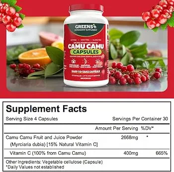
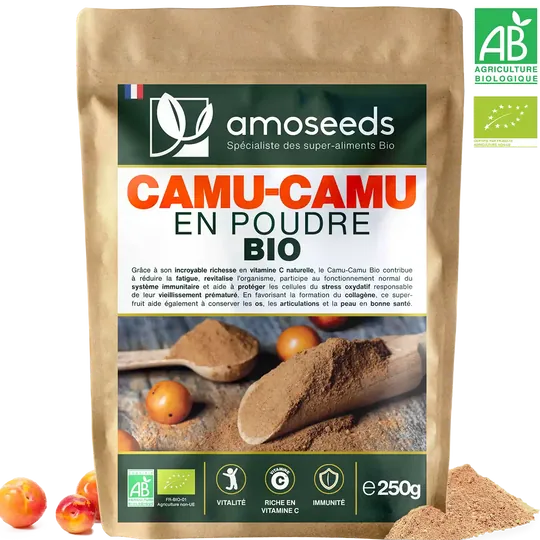

Élixirs naturels · 4 min de lecture
Élixir au Camu-Camu : le rituel naturel ultime pour renforcer l’immunité et revitaliser l’organisme


Introduction
Dans un monde où la fatigue, le stress et les carences nutritionnelles sont devenus monnaie courante, notre corps nous envoie souvent des signaux d’alerte : baisse d’énergie, défenses affaiblies, infections à répétition, manque de tonus.
Plutôt que de masquer ces signaux avec des solutions artificielles, il est parfois essentiel de revenir à l’essentiel : la puissance brute de la nature.
Aujourd’hui, je te présente un élixir naturel à base de camu-camu, un superfruit exceptionnel, encore trop méconnu, mais pourtant l’un des plus riches en vitamine C au monde.
Simple, rapide à préparer et redoutablement efficace, cet élixir s’inscrit dans une approche de bien-être globale, consciente et respectueuse du corps.
👉 Je tiens à vous rappeler une règle d’or que j’aime beaucoup et qui guide mes choix au quotidien : si la nature ne l’a pas créé, ne le buvez pas.
Le problème
Notre alimentation moderne est souvent pauvre en micronutriments essentiels.
Le stress chronique, le manque de sommeil, la pollution et les changements de saison affaiblissent le système immunitaire et accélèrent l’épuisement cellulaire.
Résultat :
fatigue persistante,
défenses naturelles affaiblies,
récupération plus lente,
sensibilité accrue aux infections saisonnières.
Le corps n’a pas besoin de plus de stimulants… il a besoin de nutriments vivants, assimilables et naturels.
La promesse
L’élixir au camu-camu agit comme un renfort naturel profond pour l’organisme.
Il soutient l’immunité, combat le stress oxydatif et aide le corps à retrouver énergie, équilibre et résistance, sans excitation artificielle.
Les bénéfices
Une immunité renforcée naturellement
Une énergie plus stable et durable
Une meilleure résistance au stress et à la fatigue
Un soutien global de la vitalité cellulaire
Un rituel simple, naturel et accessible à tous
🌿 Pourquoi ce remède est efficace
Le camu-camu est un fruit originaire de l’Amazonie, reconnu pour sa concentration exceptionnelle en vitamine C naturelle, jusqu’à 30 à 60 fois supérieure à celle de l’orange.
Contrairement à la vitamine C synthétique, celle du camu-camu est accompagnée de :
flavonoïdes,
polyphénols,
acides aminés,
minéraux essentiels.
Cette synergie naturelle permet une assimilation optimale et une action douce mais profonde sur l’organisme.
Associé à des ingrédients complémentaires comme le miel brut et le citron, l’élixir devient un véritable bouclier naturel contre la fatigue et les agressions extérieures.
💪 Les bienfaits de l’élixir au camu-camu
Renforcement puissant du système immunitaire
Grâce à sa richesse en vitamine C biodisponible, le camu-camu soutient la production de globules blancs et améliore la réponse immunitaire.Action antioxydante majeure
Il lutte contre le stress oxydatif, responsable du vieillissement prématuré des cellules.Soutien de l’énergie et de la récupération
Idéal en période de surmenage, de stress mental ou après un effort physique.Soutien du système nerveux
La vitamine C joue un rôle clé dans la gestion du stress et de la fatigue mentale.Amélioration de la vitalité globale
Le corps fonctionne mieux, plus longtemps et avec plus de résilience.
🍋 La recette de l’Élixir Vitalité au Camu-Camu
Ingrédients (synergie optimale)
½ cuillère à café de poudre de camu-camu (bio, de préférence)
200 ml d’eau tiède (non bouillante)
1 cuillère à soupe de miel brut (optionnel mais recommandé)
Le jus d’½ citron frais
Une pincée de gingembre en poudre (optionnel, pour l’assimilation)
Préparation
Verse l’eau tiède dans un verre ou une tasse.
Ajoute la poudre de camu-camu et mélange soigneusement.
Incorpore le miel, le citron et le gingembre si utilisé.
Bois immédiatement, lentement, en conscience.
⚠️ Ne jamais utiliser d’eau bouillante : la chaleur excessive détruit la vitamine C.
⏰ Comment l’utiliser
À consommer 1 fois par jour, idéalement le matin à jeun ou en début de journée.
Peut être pris en cure de 2 à 4 semaines, notamment :
en hiver,
lors des changements de saison,
en période de fatigue ou de stress intense.
Peut aussi être consommé ponctuellement en prévention.
👥 À qui s’adresse ce rituel
À ceux qui veulent renforcer naturellement leur immunité
À ceux qui se sentent fatigués ou épuisés mentalement
Aux personnes actives, sportives ou stressées
À ceux qui recherchent une alternative naturelle aux compléments synthétiques
À toute personne souhaitant instaurer un rituel bien-être simple et puissant
⚠️ Précautions
Le camu-camu est très concentré : respecte les dosages.
Déconseillé en cas de troubles gastriques sévères sans avis médical.
En cas de traitement médical spécifique, demande l’avis d’un professionnel de santé.
Toujours privilégier une poudre de camu-camu pure, bio et sans additifs.
🌱 Conclusion & appel à l’action
L’élixir au camu-camu est bien plus qu’une boisson : c’est un acte de respect envers ton corps.
Il rappelle une vérité simple mais essentielle : la nature met déjà à notre disposition tout ce dont nous avons besoin pour nous renforcer, nous protéger et retrouver l’équilibre.
👉 Si la nature ne l’a pas créé, ne le buvez pas.
Si tu souhaites aller plus loin dans cette approche naturelle du bien-être, je partage régulièrement :
des élixirs puissants,
des rituels simples,
des guides pratiques pour la vitalité physique, mentale et alimentaire.
📚 Je suis auteur bien-être sous le pseudo Chest0 JM.S., et mes ouvrages sont disponibles sur Amazon.
🔗 Retrouve tout mon univers ici :
👉 https://linktr.ee/Chest00
✨ Commence aujourd’hui à nourrir ton corps avec intelligence, conscience et naturel.
👉 À lire aussi : Les produits de la ruche
Plus de 40 recettes d'élixirs dans les livres Chest0.
Voir les livres